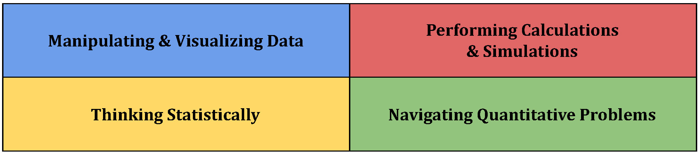
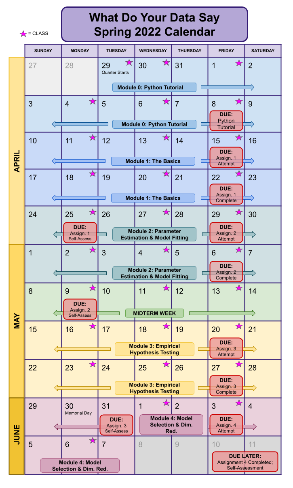

What Do Your Data Say?
Contents
What Do Your Data Say?#
A course to better help you understand your experimental data.

Course Description#
Modern data streams, whether from biomedical research labs, environmental research teams, or social-media survey projects, are increasingly quantitative and noisy. In this class, we will teach you to think quantitatively and statistically about your data, so that you can confidently answer the question “What do my data (actually) say?”
To help you answer this question, we present an approach centered on applying mathematical and statistical techniques the modern way: with a computer. This course is not a substitute for a machine learning or statistics class, instead we will give you a framework for performing parameter estimation, hypothesis testing, and dimensionality reduction in a practical, computational, and data-justified way. At the end of the course, students will possess a set of tools that will allow them to attack any quantitative problem, form a conclusions, and assess their confidence in that conclusion.
Course Goals#
This course is centered on student achievement in four learning goals:

Data Manipulation and Visualization: Students will learn to manipulate data into useful formats, construct precise and meaningful figures that clearly demonstrate a data set’s quantitative features.
Performing Calculations and Simulations: Students will learn to make calculations of novel quantities and perform in silico experiments while writing easily understandable code.
Thinking Statistically: Students will learn to identify quantitative phenomena, generate statistical hypotheses, and pose problems in terms of hypothesis tests, while also being able to identify limitations of their analyses.
Navigating Quantitative Problems: Students will develop problem-solving strategies for quantitative problems, and will learn to differentiate amongst different strategies in order to choose optimal solutions.
In focusing this course on explicit learning objectives, we hope to make the intent of all parts of the curriculum clear to the students. We will continue to invoke this framework throughout the course, including via curriculum alignment tables, module rubrics, and student self-assessments to accompany each assignment. The idea here is that we can communicate the intent of all parts of the curriculum in a variety of ways. Every worksheet, assignment, and set of notes will also contain specific learning objectives for that piece of content. Examples of such learning objectives are:
Students will learn to use random numbers in Python to simulate the diffusion of molecules.
Students will learn to use vertical and horizontal lines on figures to make meaningful annotations.
Students will learn to construct and visualize theoretical and empirical probability distributions.
Students will learn to use Bayes theorem to generate parameter estimates.
Students will learn to use bootstrapping to calculate confidence intervals for arbitrary quantities.
Students will learn to assess the likelihood that two sets of data have the same parent distribution in a variety of ways.
Prerequisites#
There are no formal prerequisites for this course, but prior experience in coding, probability, and linear algebra will be useful. There is an informal prerequisite that you are interested in rigorously performing data analysis.
Content and Instruction#
Course content is divided into four modules and will be distributed in the form of course notes and lecture videos that are available on Panopto to enrolled students. The following link should give access to anyone logged into Panopto with a Northwestern email address. These notes and videos are complementary, not redundant. Coding practice via worksheets will accompany each content module. All course content may be updated or altered at any point, so please make sure to check that you are working with the most recent versions.
We strongly encourage you to make use of Canvas’ discussion board for help with material and coding. We will create themed discussions for each module, but you should feel free to start a discussion on any course related (or unrelated) topic!
Assessments#
Similar to an experimental lab course, we hope that the majority of your time in this course will be spent problem solving: writing code to analyze data. We will assess, or facilitate your self-assessment of, your performance via several methods:
Worksheets: Each module will have several accompanying worksheets, which are self-contained guided adventures for practicing different concepts and techniques. This is the primary way in which you will practice the skills in this course before you attempt the assignments. As such, they are strongly encouraged! If needed, we will dedicate time during office hours to working on the worksheets, and the code you write for the worksheets will generally be directly applicable to solving the assignments, so you should always make sure to look them over. However, these worksheets will not be graded. We will do our best to provide solutions, but this may not be possible at this point - it will be better to start a discussion or bring it up during office hours.
Assignments: Each module will have an assignment that will typically be a longer and more difficult version of the worksheets. Assignments will consist of two phases: an attempt at the the assignment and then completion of the assignment. Assignments will comprise 70% of the final grade, with attempt and completion phases equally weighted. Earlier assignments will count less towards your grade than those for the later modules.
The assignment attempt will be due at the end of the first week of each module. The attempt should consist of either a Jupyter notebook or a PDF documenting either how you have solved a specific assignment problem or thoughts on how you plan to solve it. The central idea behind these two phases is that you are incentivized to plan your time so that you don’t find that you have no idea what’s going on the night before the assignment is due. Some examples of what constitutes an attempt can be found here.
After the attempts have been submitted, we will provide guided hints and useful code for most of the assignment, which are called the “non-bonus” problems. These will not generally be outright solutions, and in such cases, you can use this resource to complete your assignment, referencing whenever you directly use provided code.
The completed assignment will then be due a week after the attempt has been submitted. This completed assignment must be submitted as code and a PDF overview of your solutions. For more details on how solutions should be structured and submitted, look here. Assignments will be graded according to a standards-based grading scheme using our overarching course rubric.
Self-Assessments: Once completed assignments have been submitted, we will distribute a complete solution set and will ask you to make a self-assessment of your performance on the assignment in the form of a Canvas quiz. These will only be graded for completion, and are provided as a tool for you to develop self-evaluative skills. As you go forward in life you will rarely have regular formal assessments, and instead you must learn to evaluate your own work. These guides are our attempt to help you reflect on the levels of proficiency you have achieved. Completion of these assessments will comprise 10% of your final grade. For more info on self-assessments, look here.
Midterm: In the middle of the quarter we will have an online midterm examination. The midterm will focus on conceptual aspects of the course (rather than memorized facts), as well as some practical skills, such as analyzing figures, debugging code, and making calculations by hand. The midterm will comprise 20% of your final grade.
Grading and Late Work Policy#
As noted, we intend to use a mix of grading strategies that are centered on standards based assessment of student performance. What this means is that we hope to have the majority of the assessment based on the overarching course rubric
Grading#
For the self-assessments, we will provide more detailed guidance on what constitutes proficient performance on each part of the assignments. Student performance on attempts and completed assignments will be converted into a letter grade as indicated here and here, respectively. Self-assessments are free points if you complete them. The midterm will also be graded according to a more detailed rubric that we will release after the exam.
The final grade will then be a combination of roughly 70% assignments (35% attempts, 35% completion), 10% self-assessments, and 20% midterm exam.
Late Work#
We know that the likelihood that students will need to turn in work late is much higher than in the past, so we promise to be as flexible as possible with requests for extensions. In particular, we will not be asking why you need an extension. However, in order to allow as many students as possible to stay on schedule, we’re going to work under the following system:
Students can receive a 24-hour extension on any assignment, no questions asked.
For extensions of more than 24 hours, you can either:
Write us an email stating that you promise to honestly complete the work on your own.
Have the assignment removed from your grade. That is, we simply won’t include it in your final grade calculation. It will be as if the assignment had never existed - not that you will receive 0% or 100% marks.
We ask that you engage with this policy in good faith; we really think this content is good and practical and we have put a lot of work into making sure that all the parts of this course are useful for your future studies and research.
Collaboration#
You are responsible for generating your own work. If you cannot complete an assignment because of time or knowledge, we have provided a framework that should allow you to finish the course while always doing your own work. There is literally no benefit to turning in work that is not your own: you will not have learned the material, and we will have a misplaced sense of how you are doing and will not be able to support you. We are not going to police this - the world is already difficult enough - we simply state this as our expectation.
With this in mind, we strongly encourage collaboration, with the caveat that you should always feel that you have ownership over what you are turning in. If you must turn in work that depends on code that you did not write yourself, either from the notes, assignment hints, worksheets, office hours, or your classmates, credit your sources. This is academically honest and it lets us know what to judge from what you turn in.
In order to strategize your time and learning, we recommend that you try to work on your own to complete assignments, and use your classmates to brainstorm and strategize solutions for the attempt.
Course Calendar#
We hope to adhere to the following schedule, although the exact due dates may change as needed! The calendar is modified from the previous time we taught the course. The dates are manifestly incorrect but the cadence is one which we wish to follow again.

Module Overview#
Module Zero: Python Tutorial#
To bring you up to speed, we provide a custom Python tutorial for the course. At the end of the tutorial, take the Python assessment quiz, which is a no-grade quiz that will help you assess if you need more Python practice.
Module One: The Basics#
The big idea of this module is that we can visualize data distributionally in our computers and use theory or simulation to do computation of interesting quantities.
The main questions considered are:
How to think about data probabilistically?
How can we represent probabilistic information with a computer?
How can we make calculations and bring theory to life in our computer?
Topics covered:
Coin Flipping
Theory and code for PDFs, CDFs, and empirical distributions
The Central Limit Theorem
Bayes Theorem
Module Two: Parameter Estimation and Model Fitting#
The big idea here is that certain values of model parameters are more consistent with our data than others, but sometimes our data aren’t enough to constrain those parameters very well.
The main questions considered are:
Given a model, how can we get the most “consistent” parameters with our data?
How can we measure our “confidence” in those parameter estimates?
Topics covered:
Parameter Estimation:
Maximum Likelihood Estimators
Maximum A Posteriori Estimators
Intervals of “Confidence”
Bootstrapping
Least-Squares Regression
Hyperparameter Estimation
Module Three: Empirical Hypothesis Testing#
The big idea here is that we can empirically assess the likelihood that data are consistent with a model.
The main questions considered are:
How do I know my data is consistent with a model?
How can I compare two data sets?
Topics covered:
Generating, Simulating, and Falsifying Hypotheses Computationally
Comparing Distributions
Information Theory
Module Four: Model Selection and Dimensionality Reduction#
The big idea here is that we can generate models and differentiate between them in a data-driven manner.
The main questions considered are:
How can we find better or worse models within a set of potential models?
How can we generate models that balance within-sample and out-of-sample accuracy?
How can we generate intelligible models?
What even is a better or worse model?
Topics covered:
Bayesian Model Selection
Dimensionality Reduction
Cross-Validation